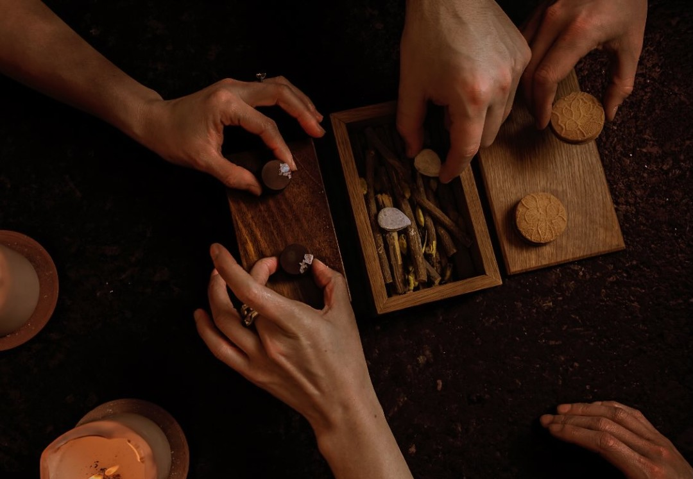

Antheia
A tasting menu built around fermentation
Antheia's tasting menu doesn't just showcase fermentation — it's structured around it. Chef Briana Kim's menu unfolds course by course around ingredients that have often been curing or preserving for months, shaped by an ongoing research process rather than a fixed set of dishes. It's one of the most conceptually focused tasting menus in the city, built entirely around a single, sustained idea.
Visit website →